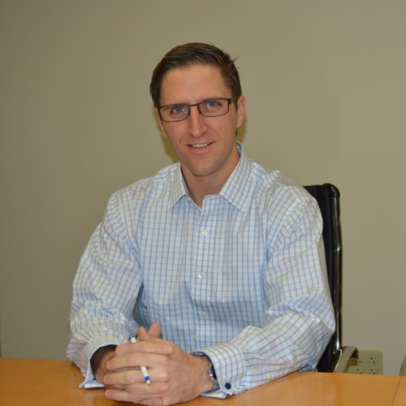

Connect With Me


About Me

Hey there, I’m Andrew. I grew up in Orlando, Florida but for the last ten years have called New Jersey home. My wife and I live in Jersey City, New Jersey. My hobbies are music, watching sports (soccer, football, etc), and reading. In my spare time, I head to the ocean and paddle out into the the surf. I’m always looking to improve my skills in the ocean and love the thrill I get from riding riding a wave. I also enjoy going for walks and hikes with my wife.
I work in accounting where I specialize in technology logistics at a firm called SS&C technologies. We serve as administrator to hedge fund and asset manager entities looking to outsource their internal operations. Day to day I provide support to external and internal clients clients looking to improve their efficiency in work flow processes. I am always learning and started the Rutgers coding boot camp in February 2018 to increase my knowledge in development. I am looking forward to getting creative and innovating with code. Check out this site to see some of my work and thanks for visiting.